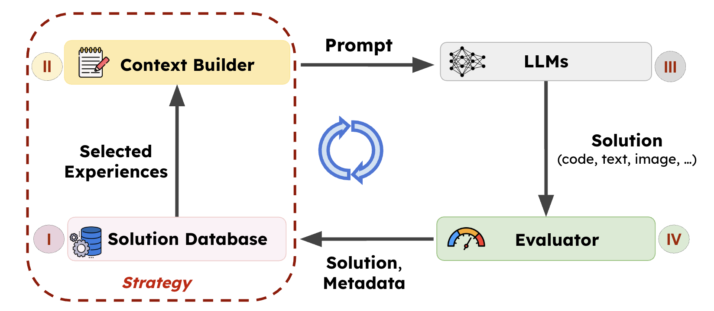
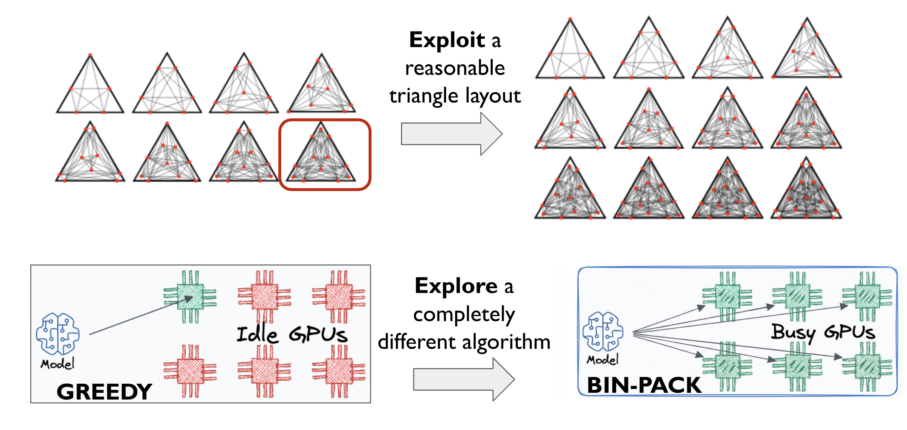
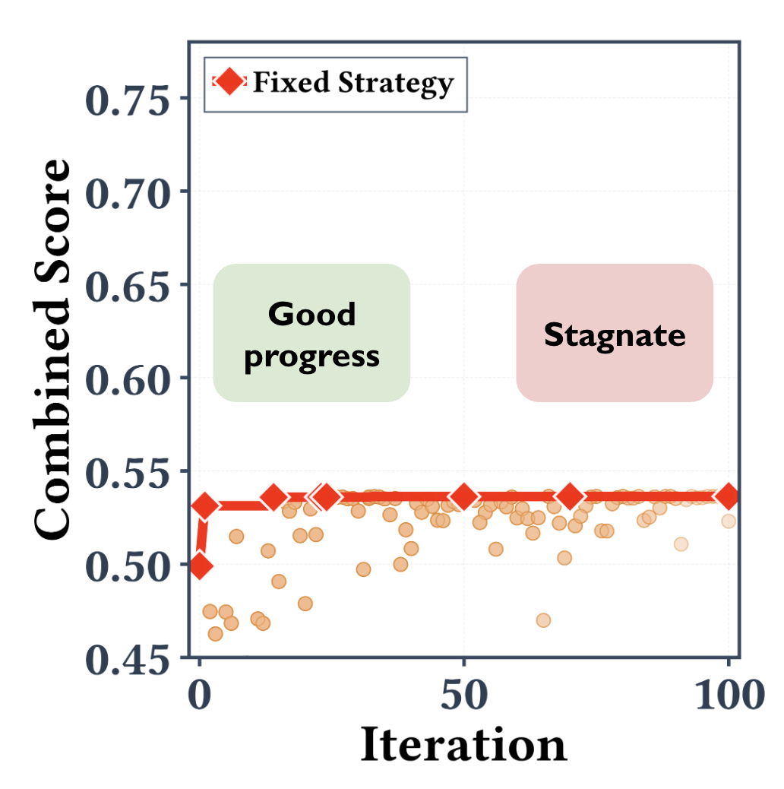
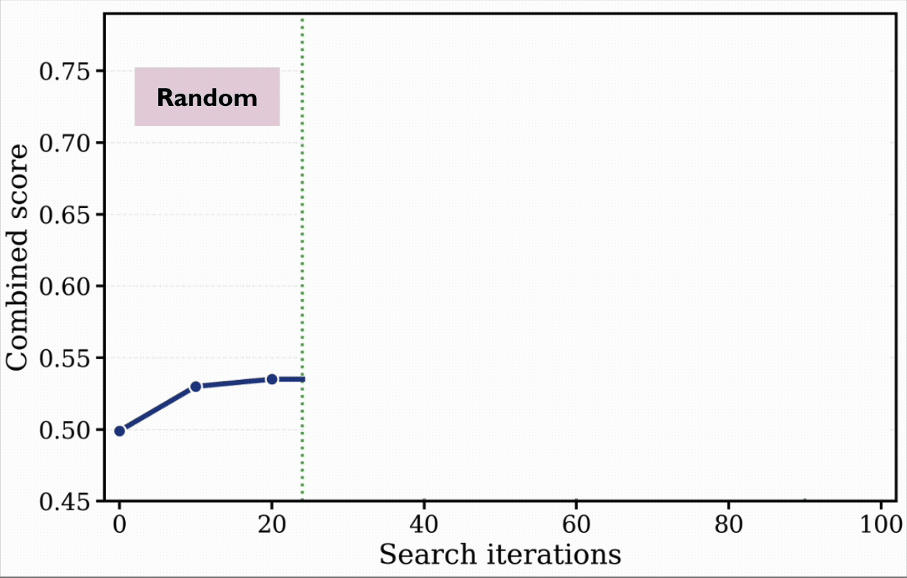
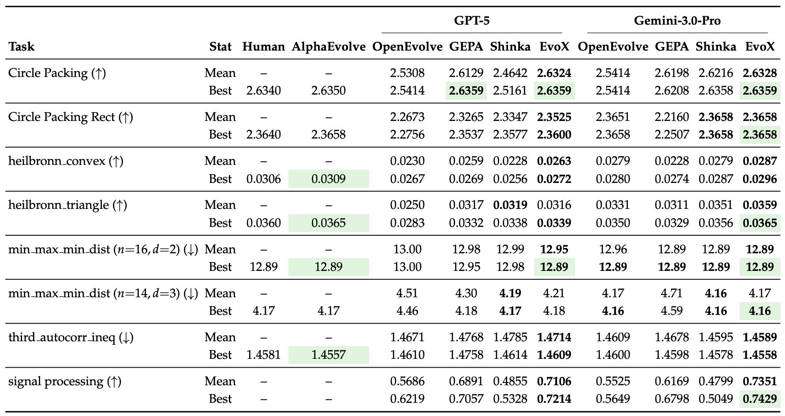
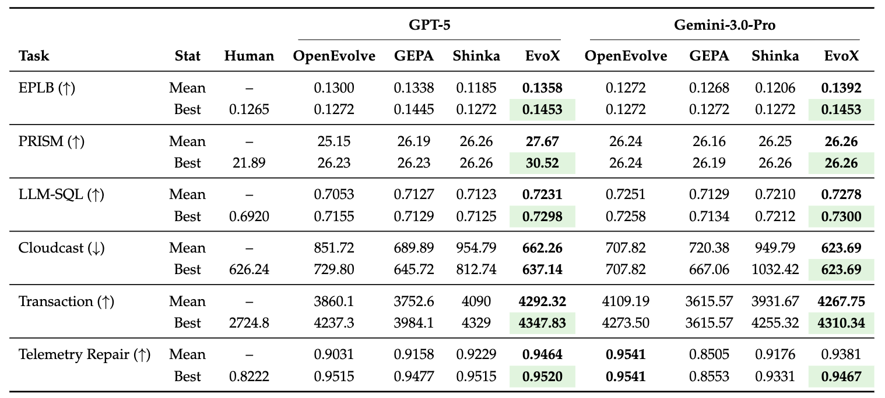
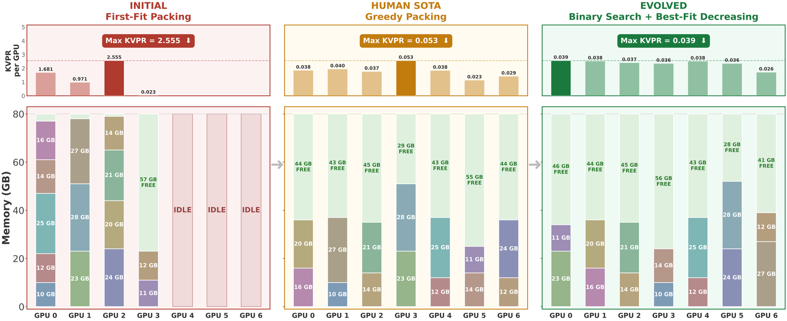
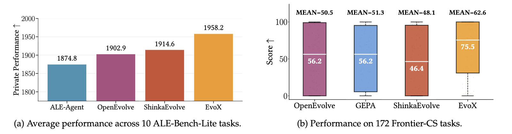
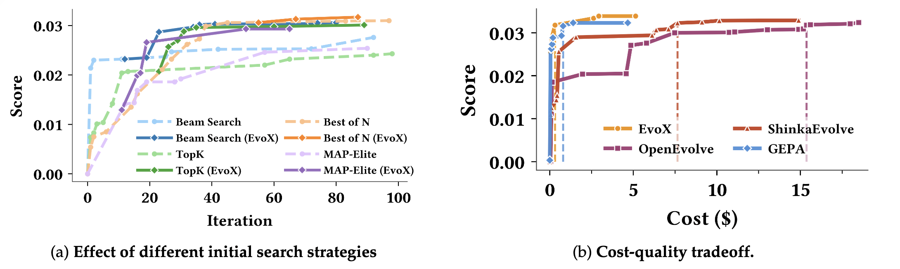

Researchers spend countless hours hand-crafting the strategies that guide LLM-driven optimization: deciding which past solutions to select, explore or exploit, and what mutations to try next. Most strategies (and the parameters controlling them) are manually specified and fixed before a run even begins.
But what if AI could improve its own evolution process?
We introduce EvoX, a meta-evolution pipeline that allows AI to evolve its own strategy used to guide optimization. Across ~200 optimization tasks, EvoX outperforms AlphaEvolve, OpenEvolve, GEPA, and ShinkaEvolve, achieving new SOTA results:
- 🏆 Best open-source performance on Frontier-CS: improves median scores by ~34% across 172 programming problems over open frameworks.
- 🏁 Matches or surpasses AlphaEvolve and prior human SOTA on 6/8 math benchmarks and 7/7 systems optimization tasks.
- ⚙️ Real-world systems gains: 14% better GPU load balance for MoE serving, and 29% lower KV-cache pressure via improved GPU placement.
- 💸 Cost-efficient discovery: breaks optimization plateaus for <$5 on tasks like Heilbronn Triangle, while existing frameworks spend $15+ (>3× more) and still stagnate.
EvoX is fully open-source and built on top of SkyDiscover. Try it out!
Background: LLM-Driven Search
LLM-driven evolutionary search systems, such as AlphaEvolve, operate through an iterative improvement loop. The system maintains a population of prior solutions and gradually improves solution quality by learning from experience and feedback.
At each iteration, an evolution (search) strategy selects a subset of prior solutions and constructs a prompt from these experiences. This prompt is then passed to an LLM to generate new candidate solutions, which are then evaluated and added back to the population.

The effectiveness of this evolution process largely depends on the strategy guiding the loop, which determines:
- Which prior solutions to use as experiences (e.g., high-quality solutions, diverse ideas, or recent improvements).
- How to instruct the LLM to produce new candidates (e.g., local refinement, structural mutation, or combining multiple ideas).
For example, AlphaEvolve and OpenEvolve mutate top-performing candidates, sometimes mixing in diverse ones. GEPA selects solutions along a Pareto frontier to recombine ideas, while ShinkaEvolve filters out less novel solutions and mutates novel ones for high-quality exploration.
The Bottleneck: Smart Models but Fixed Strategies
While today’s models are increasingly powerful, the strategies guiding the evolution process remain largely fixed and manually tuned. Before a run begins, engineers manually set the parameters that control the search process.
For example, AlphaEvolve uses a predefined ratio to determine what fraction of top candidates to refine. OpenEvolve similarly relies on static elite and diversity parameters. ShinkaEvolve uses bandit algorithms to select generator models but still depends on hard-coded knobs that determine how often top solutions are refined.
In practice, these strategies often struggle because optimization landscapes are highly non-stationary.


1. Poor generalization across problems (left). Different tasks require very different optimization dynamics. For example, geometry problems may benefit more from incremental refinement, while system optimization tasks often require large structural changes. A fixed strategy cannot perform well across both cases.
2. Poor generalization over time (right). Even within a single run, the best strategy can change. Early optimization stages benefit from broad exploration on different solutions, while later stages require targeted refinement on a particular one. Static rules rarely adapt to this shift, causing the optimization process to stagnate.
EvoX: Meta-Evolution for Automated Discovery
If LLMs can generate programs that solve complex problems, why not let them evolve their own optimization process?
EvoX frames LLM-driven discovery as a meta-learning problem. Instead of fixing a hand-designed evolution strategy, EvoX treats the strategy itself as an evolvable object. The system therefore evolves not only candidate solutions, but also the procedure used to generate them. This results in a two-level evolutionary process:
- Solution Evolution: generates and evaluates candidate solutions using the current strategy.
- Strategy Evolution: periodically updates the strategy based on the progress it produces. Updating the strategy changes which past solutions are selected and how they are presented to the model, effectively reshaping the Solution Database and Context Builder components.

Right-Hand-Side: Evolving the Solutions
On the right-hand-side, the solution evolution loop is the standard LLM-driven evolutionary search process. EvoX maintains a solution database $D_t$ of previously evaluated candidate solutions at each step $t$.
At each step, the current evolution search strategy $S_t$ uses this database to construct the next generation context (or, simply, prompt):
where:
- $x_{\text{par}}$: the parent solution(s) selected from the current database
- $\pi$: the operator describing how the parent(s) should be modified (e.g., refinement, structural mutation, recombination)
- $I$: an optional set containing other useful prior solutions, if any
The LLM then uses this context to generate a new candidate $x'$, which is evaluated to obtain score $s(x')$ and appended to the database $D_{t+1}=D_t \cup \{(x',s(x'))\}$.
Over time, this loop continuously improves the best solution discovered so far: $\max_{x \in D_t} s(x)$.
Left-Hand-Side: Evolving the Strategy
While the solution evolution loop improves candidate solutions, the strategy evolution loop (left-hand-side) evolves the search strategy itself.
Rather than updating the strategy after every candidate, EvoX evaluates the current strategy over a window of $W$ solution-generation steps.
Let $s_{\text{start}} = \max_{x \in D_t} s(x)$ and $s_{\text{end}} = \max_{x \in D_{t+W}} s(x)$ denote the best solution scores at the beginning and end of the window. We define the improvement over the window as $\Delta = s_{\text{end}} - s_{\text{start}}$.
EvoX scores the current strategy as follows. Intuitively, the score rewards strategies that produce large improvements, especially when the search is already near the frontier, while normalizing for the length of the evaluation window:
Each deployed strategy is stored in a strategy database $H$ together with its observed performance and the current population descriptor, which summarizes the current state of the solution population (e.g., score spread, frontier structure, and recent progress).
When improvement falls below a stagnation threshold, EvoX uses the LLM to generate a new strategy conditioned on both the current population descriptor and prior strategies in $H$. If the new strategy passes validation, it replaces the old one and continues guiding solution evolution, without resetting the solution database.
Case Study: Multi-Objective Signal Processing
To illustrate how EvoX adapts its own optimization strategy, we examine a multi-objective signal processing task. The goal is to design a filtering program that balances signal fidelity, smoothness, responsiveness (low lag), and minimal false trend changes.

During the run, EvoX automatically evolves its strategy through several phases:
- Hitting the Wall (0–40 iterations): EvoX begins with basic Uniform Sampling, but progress quickly stalls. It pivots to Greedy Refinement, squeezing out local gains by tweaking its top candidate. However, it soon gets trapped in a single solution family. A traditional, static optimizer would permanently stall here.
- The Real Breakthrough (40–60 iterations): Detecting the stagnation, EvoX completely shifts its approach. It evolves a Multi-Objective Sampling strategy, deliberately combining candidates with complementary strengths (e.g., merging a highly responsive program with a highly smooth one). This leads to a massive +22% performance spike.
- The Final Squeeze (60–100 iterations): As progress slows again, EvoX adopts a UCB (Upper Confidence Bound) strategy to balance exploration and exploitation (+8.5%). It then gradually tunes this ratio toward fine-grained refinement of its best solutions to extract a final +3.1%.
The Takeaway: EvoX doesn’t just optimize the solution; it optimizes how to solve the problem. Dynamically learning when to explore, diversify, and refine allows it to break through optimization plateaus that stall fixed strategies.
Results
We compare EvoX against AlphaEvolve, OpenEvolve, GEPA, and ShinkaEvolve across different domains of tasks. Except for AlphaEvolve, all frameworks use the same models (GPT-5 and Gemini-3.0-Pro) and matched iteration budgets (100) for fair comparison.
We initialize the evolution process with just a naive policy that uniformly samples solutions from the database to improve upon.
Mathematical Optimization (8 problems)

We evaluate EvoX on 8 mathematical optimization tasks covering geometric packing, extremal geometry, distance maximization, and signal processing. EvoX achieves the strongest performance among open-source frameworks. Under GPT-5 it reaches the best or tied-best result on 7/8 tasks, and under Gemini-3.0-Pro it achieves the best result on all 8/8 tasks, often matching or exceeding AlphaEvolve and human-designed solutions within 100 iterations.
EvoX also discovers novel solutions that improve over AlphaEvolve: for example, on MinMaxMinDist (3D, n=14)—the problem of placing 14 points in 3D space to maximize the minimum pairwise distance—EvoX discovers solutions with constrained SLSQP optimization, achieving 4.165798792, beating AlphaEvolve’s score of 4.165849767.

Systems Optimization (7 problems)

We also evaluate EvoX on six real-world systems optimization problems, including GPU scheduling, cloud data transfer, transaction scheduling, and telemetry repair. Across these tasks, EvoX achieves state-of-the-art results among open frameworks, while also surpassing human-designed solutions under both GPT-5 and Gemini-3.0-Pro.
For example, on the task of GPU placement for LLM serving, EvoX discovers a global load-threshold scheduling strategy, using binary-search placement and best-fit-decreasing packing to reduce KV-cache pressure by 29% compared to best human SOTA.

Algorithmic and Programming Benchmarks (182 problems)
Beyond mathematical and systems optimization, we evaluate EvoX on large-scale algorithm and programming benchmarks.
We evaluate EvoX on 10 tasks from ALE-Bench-Lite, a benchmark derived from AtCoder Heuristic Contests designed to evaluate long-horizon algorithm engineering. Across these tasks, EvoX achieves the highest average private score (1958.2) compared to ALE-Agent, OpenEvolve, and ShinkaEvolve with the same model.
We also evaluate EvoX on 172 competitive programming problems from Frontier-CS, a large-scale benchmark of open-ended computer science challenges. EvoX again achieves the strongest overall performance, reaching a mean score of 62.6 and a median of 75.5. Compared to OpenEvolve, this represents +24% improvement in mean score and +34% in median, with even larger gains over other baselines.

Start Anywhere. Reach SOTA for Under $5.
How does EvoX perform with different initialization strategies, and what is its cost‑quality trade‑off?

Starting from Different Initial Strategies
We initialize EvoX with several common search strategies, including Beam Search, Best-of-N, Top-K, and MAP-Elites. EvoX continues improving beyond the limits of any single fixed policy. By adapting how candidates are generated, selected, and refined, EvoX escapes stagnation points that typically stall static search strategies.
Achieves SOTA for Under $5
We also analyze the cost–quality tradeoff of EvoX compared to OpenEvolve, ShinkaEvolve, and GEPA under GPT-5. On the Heilbronn Triangle task, EvoX surpasses a score of 0.031 with less than $1 in LLM generation cost, significantly outperforming other open frameworks. Reaching the same threshold requires $7.6 for ShinkaEvolve and $15.4 for OpenEvolve.
Although GEPA finds competitive solutions early in the run, it plateaus after roughly 20 iterations. EvoX continues improving beyond this point, ultimately reaching the best final score of 0.0339 by dynamically adapting its strategy during optimization.
For comparison, running Claude Code with Sonnet-4.6 to achieve a similar score typically costs around $28, which is 5× more expensive.
Building EvoX on SkyDiscover
From Fixed Optimizers to Self-Evolving Agents
EvoX shows that the evolution process itself does not need to be fixed or human-designed. Rather than following rigid rules, the agent dynamically figures out the best way to navigate entirely new problem landscapes, adapting its own logic to break through stagnation points.
This meta-evolution is just the first step. Our ongoing work focuses on extending this paradigm into fully autonomous, self-evolving agents. We are building toward a future where an AI agent doesn’t just run a predefined optimization loop, but can autonomously write its own operators, design its own reward signals, and endlessly improve its own underlying learning algorithms across any domain, with zero human hand-holding.
Try It Out
EvoX is fully open-source and available as part of the SkyDiscover framework. Running it on a new optimization problem requires nothing more than a simple evaluator script:
uv run skydiscover-run evaluator.py \
--search evox \
--model gpt-5 \
--iterations 100Because SkyDiscover is built with a highly modular architecture, it’s incredibly easy to drop EvoX into your own custom workflows.
We invite the community to join us in building the next generation of self-evolving AI:
- Apply EvoX to your own novel optimization problems and research domains
- Contribute new ideas, algorithms, and benchmarks to the framework
📄 Paper · 💻 Code · 🏗️ Framework · 📬 Contact
Acknowledgments
This research was supported by gifts from Accenture, AMD, Anyscale, Broadcom Inc., Google, IBM, Intel, Intesa Sanpaolo, Lambda, Mibura Inc, Samsung SDS, and SAP. We also thank Jiarong Xing, Asankhaya Sharma, and Joseph E. Gonzalez for their valuable feedback and discussion.
Citation ✍️
If you use EvoX in your research, please cite as:
@misc{liu2026evoxmetaevolutionautomateddiscovery,
title={EvoX: Meta-Evolution for Automated Discovery},
author={Shu Liu and Shubham Agarwal and Monishwaran Maheswaran and Mert Cemri and Zhifei Li and Qiuyang Mang and Ashwin Naren and Ethan Boneh and Audrey Cheng and Melissa Z. Pan and Alexander Du and Kurt Keutzer and Alvin Cheung and Alexandros G. Dimakis and Koushik Sen and Matei Zaharia and Ion Stoica},
year={2026},
eprint={2602.23413},
archivePrefix={arXiv},
primaryClass={cs.LG},
url={https://arxiv.org/abs/2602.23413},
}